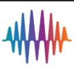

// stack
java
python
typescript
react
spring boot
docker
aws
git
langgraph
// education
sept 2026 — aug 2027
m.eng, electrical & computer engineering
toronto metropolitan university · ai concentration
2022 — oct 2026
b.sc, computer science
western university
// work
may 2025 — aug 2025
software engineering fellow
headstarter ai · new york (remote)
jun 2024 — aug 2024

data engineer intern
zippiai inc. · san francisco (remote)
// projects — hover
// recent activity
commit: merge branch 'main' of github.com/imkrisshpatel/portfolio
6h ago
commit: initial setup — html skeleton and header
6h ago
commit: initial commit
6h ago